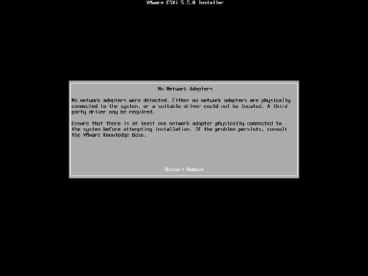
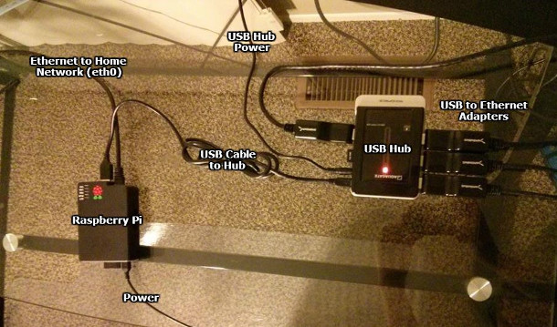

VMware: "No network adapters were detected."
Posted January 19, 2014
I was trying to install VMware ESXi 5.5 on a VMware Workstation 10.0.1 virtual machine and received this error. Huh? I was puzzled. How could ESXi not have a driver for the virtual hardware of another VMware product?
{kind=link}
After my Google-fu yielded no results, I decided to try a bunch of different configurations in hopes that I could install ESXi. I finally figured out that with the default new VM configuration, everything worked fine! So what was different?
Originally I had been choosing “Do not use a network connection” during the VM creation. As it turns out, ESXi will only detect a network adapter if it is selected here. It will not detect network adapters added after initial VM creation. After comparing network adapter configurations in the .vmx file of adapters that were added here and adapters that were added after initial VM creation, I discovered that there is one line missing from the config for network adapters after initial VM creation:
ethernet0.virtualDev = "e1000"Without this line, the guest OS does not know what type of NIC is installed. Adding that line in the .vmx file for any adapters that do not have it allows them to be recognized by the guest OS. I would go out on a limb and say this little bug affects more than just ESXi.
Using a Raspberry Pi to Simulate Hosts on a Network
Posted October 22, 2013
I am studying for my CCNA and building a small Cisco lab to help with this endeavor. I needed a way to simulate hosts on my network without spending a fortune on old computers and power, so I decided to finally put my Raspberry Pi to use! Without further adieu:
{kind=link}
To simulate four hosts, here’s the hardware I used, excluding Ethernet cables:
- 1 Raspberry Pi (model B)
- 1 Powered USB Hub
- 4 USB to Ethernet Adapters
A regular USB hub wouldn’t cut it, as the Pi doesn’t output enough power for all of those adapters, so I opted for a powered USB hub. I purchased four USB to Ethernet adapters on eBay and am working with the seller to get four that actually work (I’m up to three and I connected a defective one in the picture for the purpose of illustration). I excluded a link to the ones I purchased as you will probably have better luck finding your own (just check the compatibility list, first).
Once I was ready to start, I installed Raspbian on the Pi. I used the Ethernet port (eth0) on the Pi to connect it to my home (non-lab) network so I could SSH into it.
I then set up some udev rules to ensure that the USB to Ethernet adapters would always receive the same interface name, regardless of the order they were loaded in. I did this by creating the file /etc/udev/rules.d/70-persistent-net.rules and putting the following lines into it, obviously using the real MAC addresses of my devices:
KERNEL=="eth*", ATTR{address}=="00:11:22:33:44:55", NAME="eth1"
KERNEL=="eth*", ATTR{address}=="00:11:22:33:44:66", NAME="eth2"
KERNEL=="eth*", ATTR{address}=="00:11:22:33:44:77", NAME="eth3"
KERNEL=="eth*", ATTR{address}=="00:11:22:33:44:88", NAME="eth4"There is only one other piece to this puzzle, and that is figuring out a way to set a default gateway for each device, rather than having Raspbian use a single gateway for all network devices. This part actually took me the longest to get worked out, but long story short, I used an article I found on another blog almost verbatim (I just changed the addresses and device names). As of this writing, Raspbian (2013-09-25-wheezy) has all of the required tools and kernel modules listed by Darien pre-installed.
Rather than running those commands (and the opposites of those commands) each time I wanted to change the configuration of a “host” on my Pi, I opted to write a small Python script to do that for me. If I decide to clean it up and make it a little more user friendly, I will post it here, but for now it can break under too many conditions and I don’t want to leave anyone with their Raspberry Pi’s networking configuration in some kind of abnormal state.
Windows Update Stuck at Downloading 0% Complete
Posted October 13, 2014
I had the misfortune of a computer rebooting in the middle of downloading its initial batch of Windows Updates as I was setting it up. When trying to run Windows Update again, it was stuck with the following message:
"Downloading 127 updates (0 KB total, 0% complete)"
Thankfully, this is pretty simple to fix. Stop the Windows Update service, delete all of the files and folders in C:\Windows\SoftwareDistribution, restart the Windows Update service, and launch Windows Update again. Ta-da!
OS X Sync Network Time Script
Posted November 12, 2012
For a project I was working on, I needed to sync the time on hundreds MacBooks so they would join an Active Directory domain properly. I needed to find a way to script this, but after scouring the internet for solutions and various combinations of ntpdate or ntpd commands, nothing seemed to work with consistency.
With ntpdate, I kept getting errors complaining that the NTP socket is in use. As it turns out, you cannot use ntpdate to sync the network time if you have “Set time and date automatically” enabled in System Preferences. The solution? Disable it, sync the time, and re-enable it. Thankfully, we can do that all from the command line:
# systemsetup -setusingnetworktime off
# ntpdate time.apple.com
# systemsetup -setusingnetworktime onClean Windows 7 OEM Installation
Posted January 4, 2012
Here’s the situation: you’re “the computer guy” to your family or friends. They just got a new computer and ask you to get it in good working order before they start using it. You power it on to find trials of Norton and Office and 30 other programs that can only be considered bloatware. You’d like to perform a clean installation but keep their license. Here’s how:
- Backup your old activation files with ABR (Activation Backup & Restore).
- Use this ei.cfg Removal Utility to remove ei.cfg from your Windows 7 ISO.
- Burn the ISO to a disc.
- Install Windows 7 from the disc. When prompted for the edition, choose the same edition that was pre-installed on the computer before.
- When prompted for a product key, do not enter one, just click Next. Uncheck the box to activate Windows automatically, as well.
- Continue with your Windows installation as per usual.
- Restore the license with ABR as soon as Windows is installed.
If these steps don’t work for you, there is a more detailed guide by the creator of ABR that you can check out. Essentially, you’re just migrating your license files from the old installation to a clean installation on the same computer.
Storing IP Addresses in MySQL
Posted December 17, 2011
While storing IPv4 addresses as strings as MySQL may seem like the obvious solution, there’s a better one: storing them as long integers. Specifically, you will want to make your IP address field an unsigned bigint.
To convert IP addresses to long for database storage in PHP, there is a convenient function: ip2long(). Going back to an IP address after pulling it from your database is just as easy: long2ip().
Creating a MySQL User with --skip-grant-tables
Posted December 17, 2011
A friend of mine lets me use his box for almost anything I want and made me a sudoer. Today, I needed to create a MySQL user for myself without knowing any of his passwords. Here’s how I did it:
$ sudo service mysql stop
$ sudo mysqld_safe --skip-grant-tables &
$ mysql -u root
> FLUSH PRIVILEGES;
> CREATE USER '<username>'@'localhost' IDENTIFIED BY '<password>';
> GRANT ALL PRIVILEGES ON *.* TO '<username>'@'localhost' WITH GRANT OPTION;
> exit;
$ sudo kill <mysqld-pid>
$ sudo service mysql startTa-da!
Singleton MySQL Class for PHP
Posted December 11, 2011
This seems to be a pretty flexible and well-coded MySQL class for PHP.